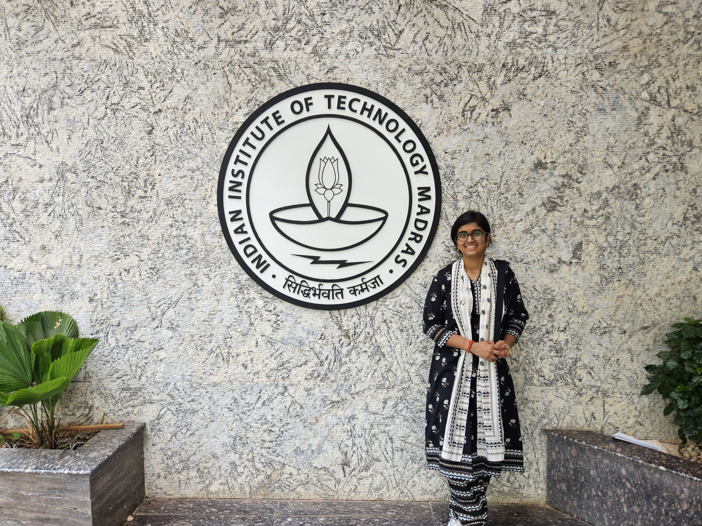
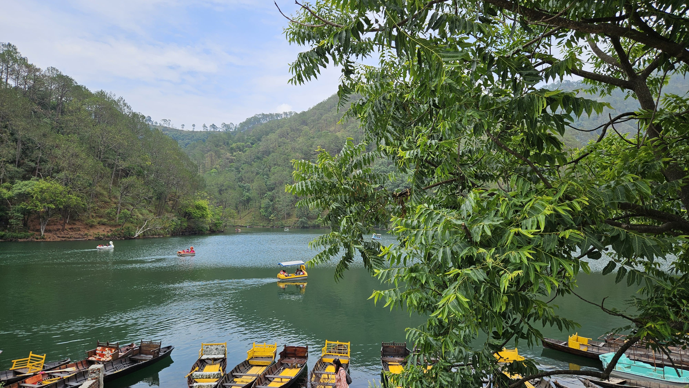
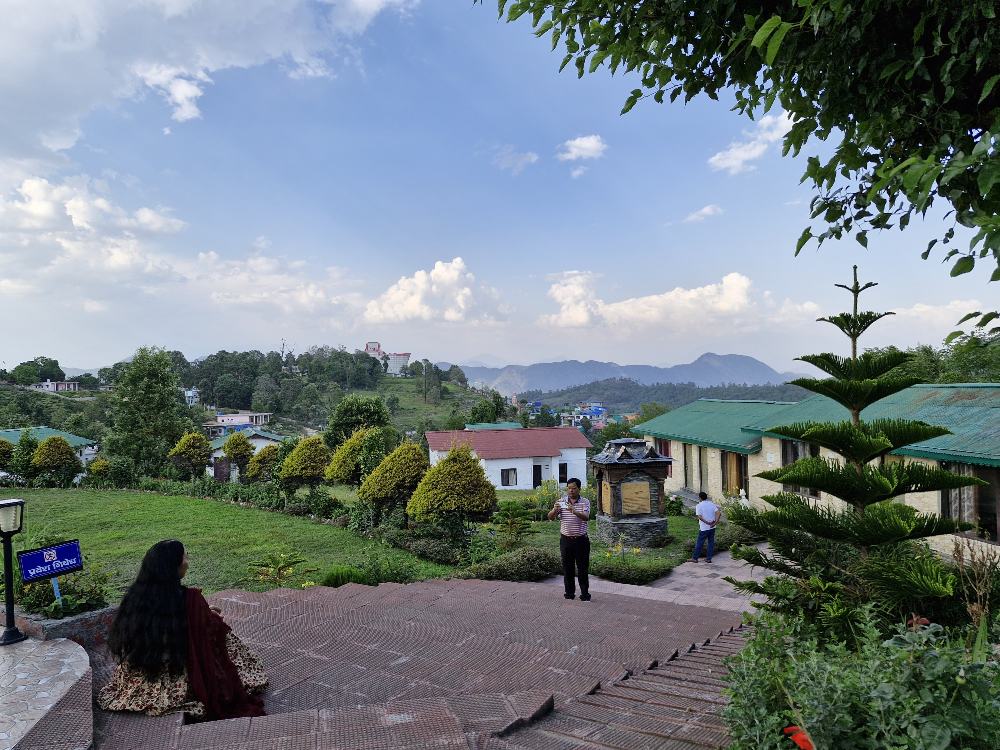

|
 Contact
Email:
Phone:
Location: Interests
Hobbies
Technical Skills
Languages
Tools |
Shaifali VashisthaProduct Design & Management | Data Science | Technology & Creativity#ProductDesign #DataScience #Coding #ProblemSolving #Creativity About MeHi! Thank you for visiting my page. I am Shaifali Vashistha, currently pursuing my M.Tech in Product Design & Management at IIIT Hyderabad. Before this, I completed my B.S. in Data Science & Applications from IIT Madras. My academic background is primarily in data, technology, programming, machine learning and software development. I enjoy coding and solving problems, and I like the process of breaking a problem down and finding a way to build a solution. During my journey in Data Science, I became increasingly interested in what happens beyond the technical solution. I became curious about understanding users, identifying the right problems, and designing products that are useful to people. This curiosity led me to Product Design & Management. I am currently exploring the intersection of data, technology, design and people. EducationM.Tech in Product Design & Management
International Institute of Information Technology,
Hyderabad Currently exploring product design, product development, user needs and the connection between technology and product thinking. B.S. in Data Science & Applications
Indian Institute of Technology Madras Studied data science, programming, machine learning, software engineering, databases, business analytics, data visualization and related areas. School Education
Central Board of Secondary Education, Delhi InterestsProduct DesignI am interested in understanding users and their problems and thinking about how technology can be turned into useful and meaningful products. Data & AIMy background in Data Science introduced me to machine learning, data analysis and artificial intelligence. I enjoy exploring how data can support better decisions and products. CodingI enjoy coding because it gives me a way to turn ideas into something tangible. I particularly enjoy experimenting, debugging and building applications. Problem SolvingI enjoy problems that require patience and logical thinking, whether they are programming problems, data problems, product questions or a Sudoku puzzle. ExperienceTeaching Assistant — Modern Application DevelopmentIIT Madras | Spring 2023
Mentor — Modern Application DevelopmentIIT Madras | Fall 2022
Group Leader — Bandipur GroupIIT Madras | Fall 2022
ProjectsStrategic Decision-Making & Algorithm DevelopmentReinforcement Learning | Fall 2023
Mask Data AnalysisData Visualization and Design | Spring 2023
Mentorship Platform ApplicationSoftware Engineering | Fall 2022
Kanban ToDo ApplicationApplication Development | Fall 2022
HobbiesPuzzle Solving & SudokuI enjoy puzzles and Sudoku because I like problems that require logical thinking, patience and attention to detail. Art & SketchingSketching is a creative break from technical work. I enjoy experimenting with ideas and paying attention to small details. ReadingI enjoy reading and exploring different ideas, subjects and perspectives through books. GardeningI enjoy taking care of plants and watching them grow. Gardening is a nice reminder that some things take time and patience. PhotographyPhotography makes me notice details, colours, perspectives and interesting moments around me. JournalingJournaling gives me a space to write down thoughts, ideas, experiences and things I want to remember. Picture GalleryA few things I enjoy capturing through photography, and everyday moments.   Achievements
A Little More About MeI enjoy things that make me think. A good puzzle or Sudoku can easily keep me occupied for longer than I expected. I also enjoy making things. Sometimes that means writing code, and sometimes it means sketching something on paper. I like observing and documenting things through photography and journaling, and I enjoy the quiet process of taking care of plants. Let's ConnectI am always happy to talk about technology, product ideas, coding, data, design, books, photography or an interesting puzzle. Email: shaifalivashistha@gmail.com GitHub: GitHub |